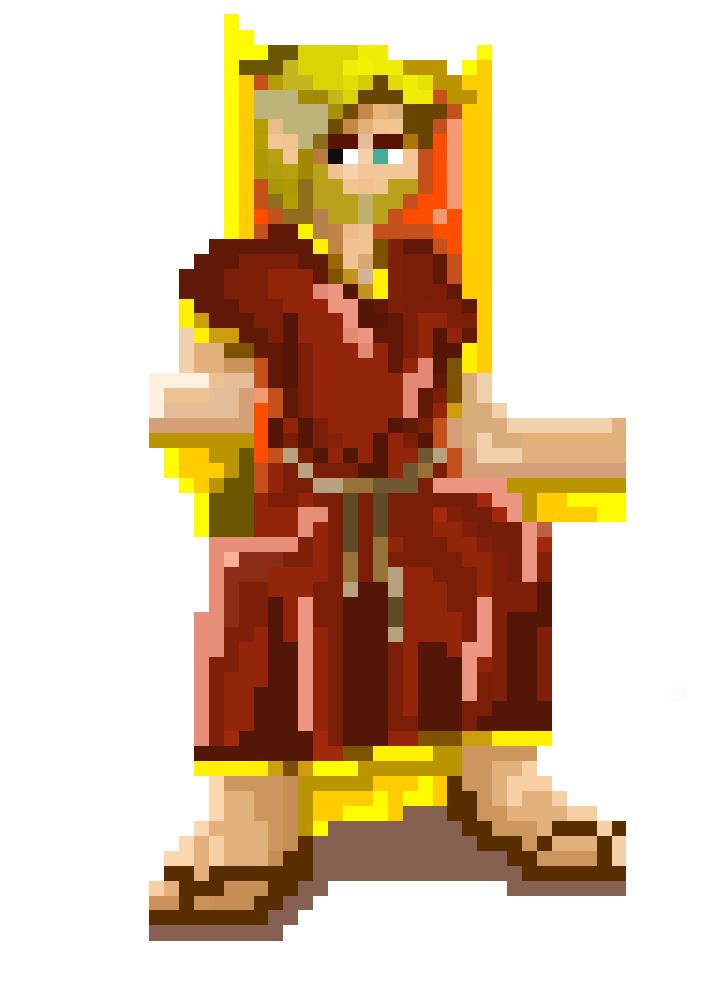

Alejandro de macedonia se había hecho de un nombre después de haber conquistado a sus enemigos jurados, los persas a los cuales los inculpo de la muerte de su padre, fue llamado salvador por unos, un genio por otros y asesino por la mayoría y de todo ese temor nació el apodo con que lo conocería la historia; Alejandro magno.
El problema llegó después que todo ese poder y todos los reinos que había conseguido le habían hecho un gran daño a su cerebro. Egipto, Grecia, Persia, y Macedonia eran sus más grandes logros militares, logrando así tener la mayor parte de medio oriente y Asia, de esa forma había podido conquistar la mayor parte del mundo conocido hasta el momento.